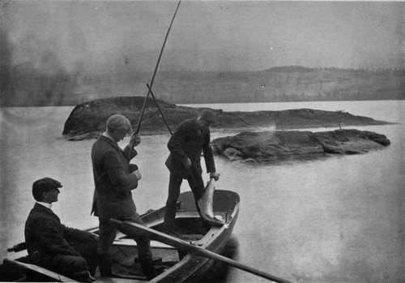

A Lesson On Loch Nell
Description
This section is from the book "Salmon Fishing", by W. Earl Hodgson. Also available from Amazon: Salmon Fishing.
A Lesson On Loch Nell
The Etive, in Argyllshire, maintains a good reputation. Mr. Ian T. Malcolm of Glenetive, who has fished it regularly for six seasons, writes:-
" As far as I am able to judge, there has been no marked change in the sport. Like most West Highland rivers, the Etive rises and falls quickly; but when it is in condition I find that salmon and seatrout rise freely and well. There appears to be a good stock of fish, especially of sea-trout, and they run very large for so small a river.'"
The Shiel, in Argyllshire, is as good as ever it was, and that is saying much. Mr. C. D. Rudd of Ardnamurchan tells me that, although the sport of any month, most notably September, varies much from year to year, the annual results are fairly uniform.
Loch Tay, in the heart of the Highlands, has long been a subject of perplexity. Opinions as to whether it is as good as it once was, or may again be so, are almost hopelessly at variance. The opinions to which I allude are the best available. Lord Breadalbane himself, who is owner of the loch, could give me only a general impression; but he very kindly asked the keepers of the hotels along the shores to contribute their judgments, and these, though in all cases quite sincere, are such as would puzzle the wisest expert in evidence. Mr. William Bennett, at Bridge of Lochay, thinks, from the comments of boatmen and anglers, that the sport "is seriously deteriorating."" According to Mr. Peter Campbell, at Ardeonaig, who founds his belief on figures, it is improving. Mr. H. J. Knight, at Killin, is less definitive. Having tabulated the figures of fish caught year by year since 1898, he says : " You will see from the above that the sport varies very much. 1900 was the worst season we have had; in 1893 we had 221 salmon, weighing 4352 lbs., which was exceedingly good. There is no doubt that the fishing is not nearly so excellent as it was some ten or fifteen years ago; but I have every hope of it improving. The netting down the Tay harms the loch very much indeed ; but the taking-off of the nets from Friday night until Monday has done some good, and is a move in the right direction."
On Loch Tay - James Temple.
Pondering these statements, I perceived that the variation in the number of fish caught from year to year might be partly explicable in a simple manner. If there were not so many anglers on the loch in one year as there had been in another, a difference in the sport would be accounted for without any speculation as to whether the stock of fish might be diminishing, or as to whether the fish were becoming more difficult to catch. It turned out that there was no help in that conjecture. The boats on the loch, of which there are about twenty, are, and have for a long time been, as much in use one year as they were in any other. Some of them are always in use during the best months of the season, which begins on January 15. Where was enlightenment to be found ? So I asked, and ask again. Lord Breadalbane's general impression, which is that salmon fishing in all waters is going down, was not compatible with a statement which, at his own very obliging wish, has been made out and sent to me by his agent, Mr. James Glen. Here is the statement:-
Loch Tay Salmon Fishing
Waters. | No. of Fish. | Weight in Lbs. |
Season 1903 | ||
Kenmore .... | 10 | 135 |
Killin .... | 55 | 933 |
Bridge of Lochay | 21 | 370 |
Ardeonaig | 11 | 189 |
Remony .... | 1 | 17 |
Reserved water-East End | 2 | 39 |
Letterellan | 4 | 77 |
Total . | 104 | 1760 |
Season 1904 | ||
Kenmore.... | 21 | 403 |
Ardeonaig | 23 | 428 |
Bridge of Lochay | 21 | 389½ |
Fernan .... | 1 | 14 |
Killin .... | 109 | 1951 |
Letterellan | 6 | 108½ |
Remony .... | 4 | 58 |
Reserved water-East End | 14 | 270 |
Total . | 199 | 3622 |
Season 1905 | ||
Kenmore | 17 | 348 |
Killin .... | 122 | 2062½ |
Ardeonaig | 15 | 250½ |
Bridge of Lochay | 18 | 324 |
Reserved water-East End | 5 | 90 |
Letterellan | 9 | 164 |
Total . | 186 | 3239 |
One would have to be a stern and unbending pessimist to find in these figures any indication of decline. I have investigated further. I find that in 1873 the salmon caught numbered 779; in 1875, 913; in 1877, 869; and in 1878, 851. At first these facts seem to show that there were halcyon times between twenty and thirty years ago, and so, indeed, there were; but reflection counsels caution. Statistics of sport may easily be as misleading as those of the Board of Trade after editing by a zealous politician. The basket of 779 salmon in 1873 has to be thought of in relation to one of 293 the year before, and to one of only 114 in 1871; between 1875 and 1877, two rich years, there was a basket of 476, which was comparatively poor. The records I have studied, which cover thirty years, are fruitful only in a negative suggestion. It cannot be shown that time has anything to do with the variations of sport on Loch Tay. The figures rise and droop incalculably. Not being very much acquainted with the famous loch, I must not be venturous in suggestion; yet I may, without immodesty, air one timorous theory. All salmon fishing on Loch Tay is spring fishing, and spring fishing has a peculiarity of its own. A sybarite would call it wintry work. Men not given to neurotic apprehensions about their health have been known to wear duplicate clothing of ordinary kind and two or three overcoats when engaged in it. Often all the mountains round the loch are snow-clad, and sometimes when your salmon leaps into the air a blizzard screens him from the eyes. Botanists and poets might deem spring in these regions to be a figure of speech. Occasionally, however, it is something more. Now and then the south wind melts the mountain snow-drifts very early in the year, and, through processes of Nature too complex to be explained at present, the temperature of the loch becomes higher than the temperature of large streams falling into the Tay. What happens ? Instead of running into the tributaries of the river, such as the Lyon, the spring fish take the loch. Any one disposed to flout this thought is invited to pause until he has read a passage from the writings of Mr. Archibald Young, advocate, Commissioner of Salmon Fishings in Scotland. " The Scottish rivers flowing into the German Ocean," Mr. Young wrote, " are almost all early rivers. They have comparatively long courses, and fall into the sea at considerable distances from their mountain sources, after running for some part of their career through districts not greatly elevated and possessing a moderate climate. But the German Ocean, into which these rivers flow, is a cold sea; and in winter and early spring the river temperature is, in ordinary seasons, much the same as that of the sea, and therefore salmon ascend these rivers early in the season. On the west coast, on the other hand, the rivers that fall into the Atlantic are all late. They have short courses, and their sources are much tilted up, as they rise in that lofty and singularly picturesque chain of mountains which, beginning not far from Cape Wrath, skirts the shore of Sutherland, Ross-shire, and Inverness for more than a hundred miles at distances varying from five to twenty miles from the western sea. In winter and spring these mountains are snow-clad, and every partial melting of their snow brings down torrents of ice-cold water, which rush through the short channels of these rivers into the sea. But the water of that sea, unlike that of the German Ocean, that washes our eastern shores, is warmed by the soft influence of the Gulf Stream, and the salmon consequently prefer to remain in it until the snow water has run off, and the milder weather of June and July has raised the temperature of the river waters, and then they begin to ascend.,, All this is to say that early in the year salmon run into water that is comparatively warm. It seems clear, then, that again and again, when the weather is propitious, which is not to be expected often, the salmon will go into Loch Tay as plentifully as they ever went, and that thirty-one fish in a week to the rod of Colonel Murray of Polmaise may yet cease to be a " record."
Continue to:
Tags
salmon, fish, river, fishing, trout, loch, flies, fishing flies